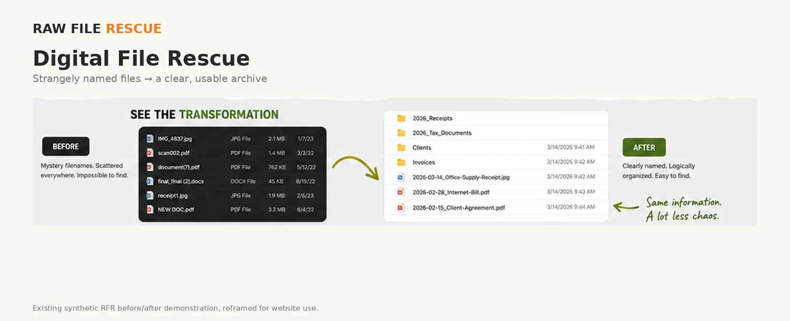
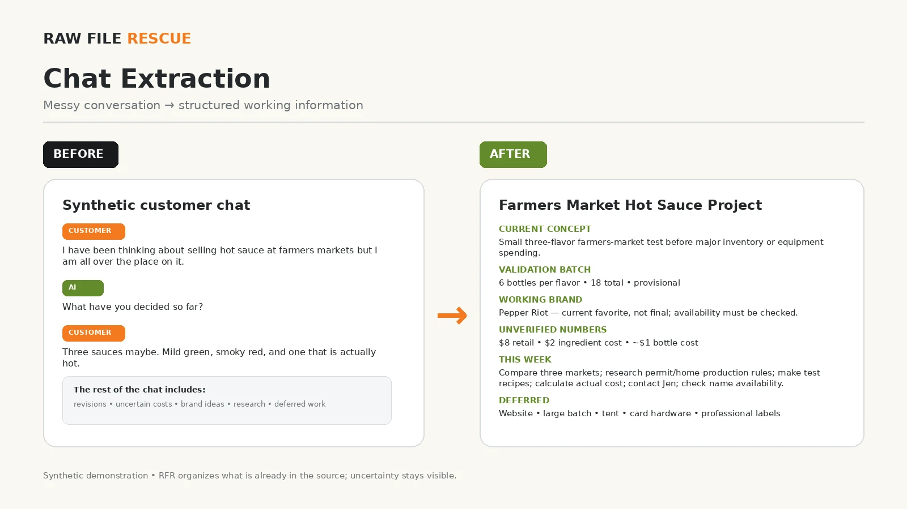
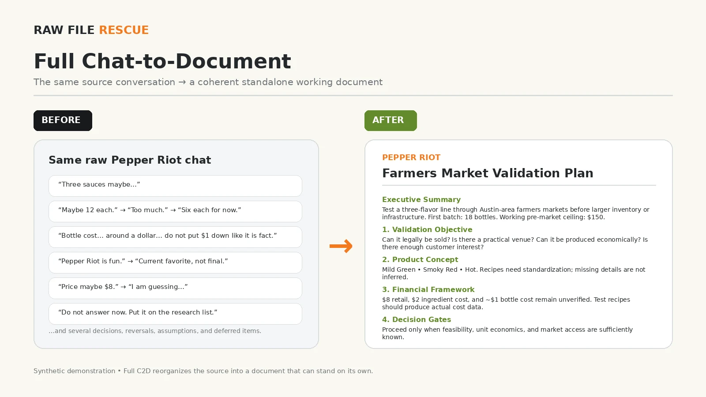

Digital File Rescue
Clean up confusing filenames, scattered folders, duplicate candidates, and disorganized digital material.
Raw File Rescue helps individuals and small businesses make sense of messy digital files, documents, browser bookmarks, AI chats, data, and paper backlogs—so you can find what you need and move forward.

Logical folders, clearer names, and searchable information.
Spend less time searching through scattered files.
Nothing is intentionally deleted without your review.
The solution depends on what your backlog actually needs.
Start with the mess. Then build the right solution for it.
Clean up confusing filenames, scattered folders, duplicate candidates, and disorganized digital material.
Create practical folder structures, naming conventions, and organized records for small-business files.
Turn long AI chats and scattered conversations into usable, structured documents, summaries, and action items.
Pull useful information from documents and files into cleaner tables, inventories, summaries, or structured records.
On-site organization and digitization for manageable paper backlogs without taking your originals off site.
Combine paper, digital files, images, spreadsheets, and other materials into one workable organization plan.
Organize browser bookmarks into clear folders, rename confusing entries, and identify duplicate, outdated, or potentially broken links for your review.
Remote projects use an exported bookmark file—no browser passwords or account access required. Automated results are review candidates, not automatic deletion decisions.
The goal isn't complicated software. It's knowing where things are and what they're called.
Examples show the kinds of transformations Raw File Rescue can perform. Every project is scoped around the customer's actual material.
A sample business backlog showing how downloads, Drive material, sales orders, and receipts can be brought into a consistent project archive.


Downloads, Drive folders, and mixed paper-and-digital material reorganized into usable systems.


Long conversations can become concise extracts, structured documents, and project-ready records.


DIY FILE RESCUE
Search your Drive for “Untitled.” Open each file, decide whether it's worth keeping, and rename it based on what it actually contains. It's a simple cleanup that can make important files much easier to find.
That's where Raw File Rescue comes in. We review, rename, and organize hard-to-find files using a consistent naming system—while you spend your time on something else.
Get Help With My FilesWant to tackle it yourself? See these cloud-cleanup how-to guides from the Fashion Institute of Technology.
Stop living with names like Untitled, IMG_4832, or Final_Final_2. Give files names that tell you what they contain.
Look for copies, numbered files, and suspiciously similar versions that may be taking up space or causing confusion.
Check the file name, size, date, and contents before removing anything. Raw File Rescue follows the same principle: Review Before Delete.
When your platform supports it, use version history instead of creating Draft1, Draft2, Final, and Final2.
If one file belongs in two places, a shortcut can be better than maintaining copies that may drift apart.
You can do all of this yourself.
Know what needs fixing but don't want to spend hours doing it? Raw File Rescue can handle the cleanup for you.
Get Help With My FilesBillable project work during the measured pilot period. Time is billed in 15-minute increments.
Every rescue is different. Before billable work begins, we'll define what is being worked on, the proposed approach, and the estimated time or cost.
Show me what's messy, difficult to find, or taking too much time.
I'll review the material, ask questions, and define a practical scope.
Files, documents, data, bookmarks, or paper are organized according to the agreed plan.
You receive the organized output and know where everything belongs.
Potential deletions are reviewed before permanent removal.
Temporary working copies are ordinarily retained for seven days after final delivery is made available.
Paper-to-digital pilot work is performed on site. Originals stay with you.
The project scope, authorization, payment expectations, and data-handling approach are documented before customer-specific production begins.
Before production begins: 90% of service fees paid will be refunded. Ten percent is retained for completed intake, setup, and administrative work.
After production begins: completed and earned work is nonrefundable. Any unearned prepaid service-fee balance will be refunded.
Customer-authorized, nonrefundable third-party expenses are excluded from refunds. Minimum-charge services become nonrefundable once production begins.
“Production begins” means customer-specific work performed after intake and acceptance of the scope or quote.
Raw File Rescue collects only the information reasonably needed to evaluate and complete the agreed project. Customer material is not sold or used for unrelated purposes.
Temporary working copies are ordinarily deleted seven days after the final deliverable is successfully sent or made available through the agreed delivery method.
External AI processing is optional and requires express customer authorization. Browser-cleanup customers provide an exported bookmark file; browser passwords and account access are not requested.
Potential deletion decisions remain subject to Review Before Delete.
Before billable work begins, the customer receives a defined scope, proposed approach, and estimated time or cost. Material changes require approval before additional work proceeds.
One basic correction round is included for errors or reasonable adjustments within the agreed scope. New requests or expanded scope may require a revised estimate.
Accepted projects use written intake, scope, authorization, review, delivery, and payment documentation appropriate to the work.
Special authorization is required when a project involves external AI processing, remote-access tools, duplicate/version decisions, or another material risk identified during review.
Raw File Rescue is being developed in Austin, Texas, with a measured pilot focused on practical service, clear safeguards, and documented results.
Tell me what you're dealing with and we'll figure out the next step.